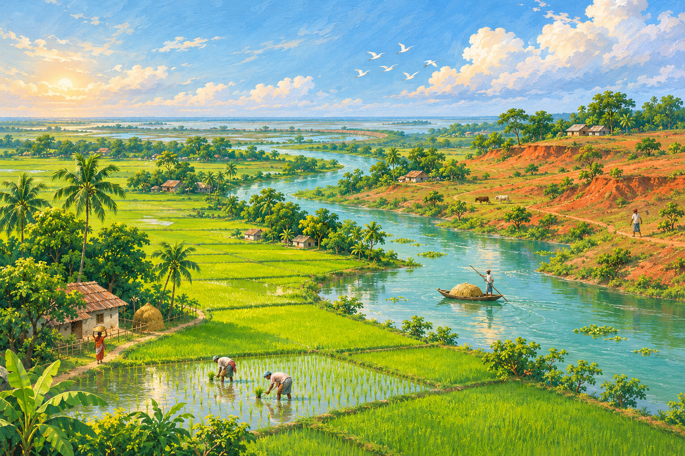
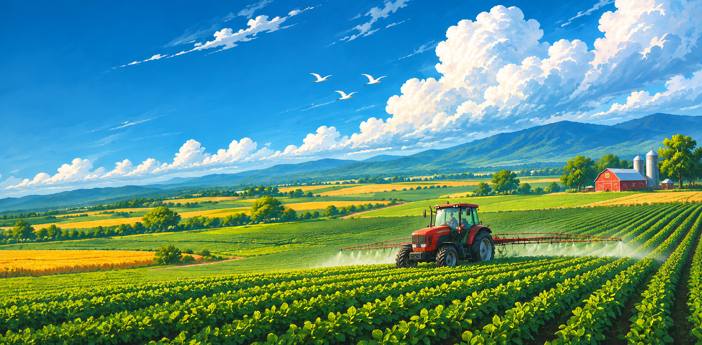

01
Bangladesh
Every drop has a future.
Follow the choices shaping the Barind region and the distinct constraints of coastal farmland.
Explore Bangladesh ↗The future is already growing
One planet. Different agricultural realities. A shared intelligence engine.
Explore how Earth observations, agricultural science and climate scenarios can reveal more resilient crop-rotation strategies.
Every harvest begins long before the first seed is planted. It begins with a decision about what comes next.
Scroll to explore↓One planet. A thousand agricultural realities.
In one region, farmers are deciding how much groundwater another growing season can afford. Elsewhere, the challenge is protecting soil between harvests. Along low-lying coasts, even available water may carry salts that restrict what can grow.
What should I grow next—and what will that decision cost?
Follow the choices shaping the Barind region and the distinct constraints of coastal farmland.
Explore Bangladesh ↗
Explore cropping sequences, soil cover and changing conditions in the Iowa research pilot.
Explore the United States ↗See which environmental questions can be supported for a selected location—and which cannot.
Explore Earth ↘The hidden cost of a single decision
A crop consumes water. It occupies a season. It draws on soil resources. It creates expenses—and exposes the farm to risk.
A promising yield does not always mean a promising future.The best-looking option today may not be the strongest option tomorrow.
The intelligence behind the landscape
NASA Earth observations help us understand environmental conditions surrounding agricultural decisions. But satellite data alone cannot tell a farmer what to plant.
That requires environmental evidence, crop requirements, regional agronomy, farm constraints and transparent decision models.
Explore the science ↘Explore supported historical temperature, rainfall, radiation and environmental variables.
Combine observations with soil information, crop calendars and farmer constraints.
Place the current rotation beside locally compatible alternatives.
Recompute under hypothetical changes in weather or irrigation access.
Trace sources, assumptions, limitations and reasons behind each result.
Not just a map of the Earth. A way to think more carefully about the next growing season.
RootShift / the signature interaction
Not three promises. Three strategies to investigate.
What if the season changes?
A resilient decision is not simply attractive under ideal conditions. Its tradeoffs remain visible when assumptions change.
The production experience will send this changed assumption through the scientific model and show recomputed tradeoffs—not a visual slider trick.
An answer you can question
Where did the weather information come from? Which crop requirements were used? What assumptions shaped the comparison? What information is still missing?
Trust should not require taking a model’s word for it.
A platform worth returning to
Conditions evolve. Farmers reconsider their plans. ORBITILL is designed to help people return to their fields, revisit comparisons and understand what changed.